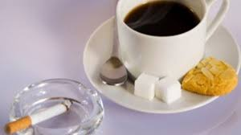
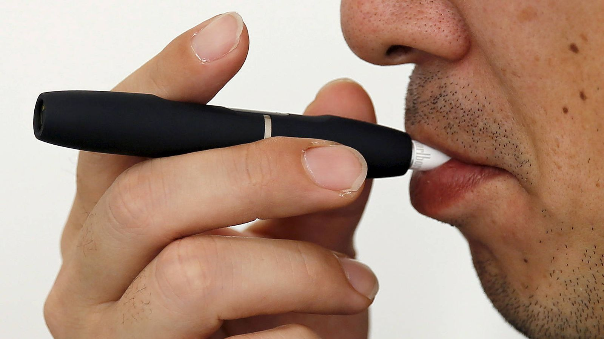

El tabaquismo se clasifica principalmente por el tipo de consumidor (activo o pasivo), la intensidad del consumo (leve, moderado, severo) y la forma de administración, incluyendo cigarrillos convencionales, puros, pipas, dispositivos electrónicos (vapeo) y tabaco sin humo. Todos los productos contienen toxinas y generan adicción.
Tipos de Tabaquismo según el Consumidor
Tabaquismo Activo: El individuo consume directamente tabaco, experimentando dependencia fisiológica a la nicotina.
Tabaquismo Pasivo: Personas no fumadoras expuestas al humo de segunda mano (humo de corriente secundaria o exhalado), lo que causa riesgos graves de salud.
Clasificación por Intensidad (Frecuencia)
Fumador Leve: Menos de 5 cigarrillos al día.
Fumador Moderado: Entre 6 y 15 cigarrillos diarios.
Fumador Severo/Fuerte: Más de 16 cigarrillos al día, con alta dependencia.
Tabaco sin humo: Productos para masticar o aspirar (rapé, snus).
Tabaco de liar o Bidis: Variantes de cigarrillos, a veces percibidas como naturales, pero igualmente perjudiciales.
Por el perfil de conducta
Fumador Social: Consume solo en situaciones grupales o eventos sociales.
Fumador por Estrés: Utiliza el tabaco como mecanismo para calmar la ansiedad o presión.
Fumador de Hábito: Fuma de forma automática en momentos rutinarios (con el café, al despertar).

Nuevas formas de tabaquismo
Vapeo: Uso de cigarrillos electrónicos que calientan líquidos con o sin nicotina.
Pipas de agua (Cachimbas): Inhalación de tabaco filtrado por agua (alta toxicidad por volumen de humo).
Tabaco calentado: Dispositivos que calientan el tabaco sin llegar a la combustión

El tabaquismo es un factor de riesgo en "grupos vulnerables" (menores de 20 años) y comporta alto riesgo de recaída tras intentar dejarlo.